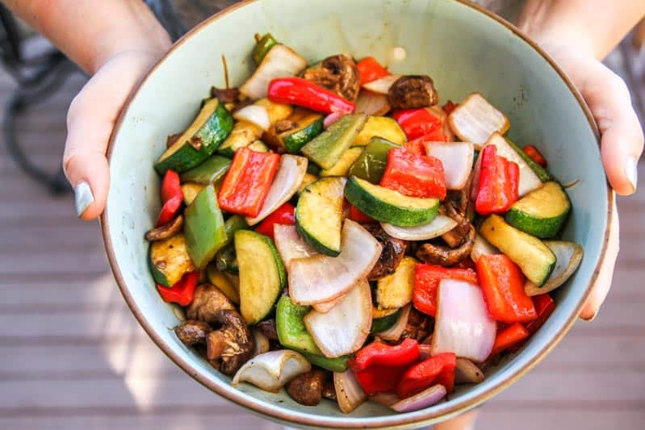
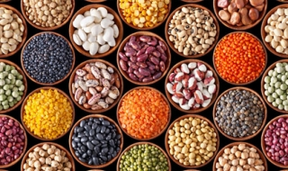

<section>
    <article>
      
      <p> <a routerLink="find-recipe-meat">meat</a> </p>
    </article>
    <article>
      
      <p><a routerLink="find-recipe-dairy">Milk</a></p>
    </article>
    <article>
      
      <p> <a routerLink="find-recipe-vegetables">vegetables</a> </p>
    </article>
    <article>
      
      <p> <a routerLink="find-recipe-legumes">legumes</a> </p>
    </article>
</section>

<app-block-create-recipe></app-block-create-recipe>
